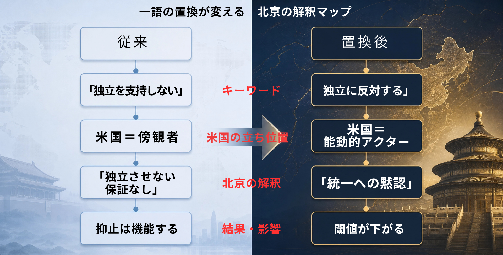
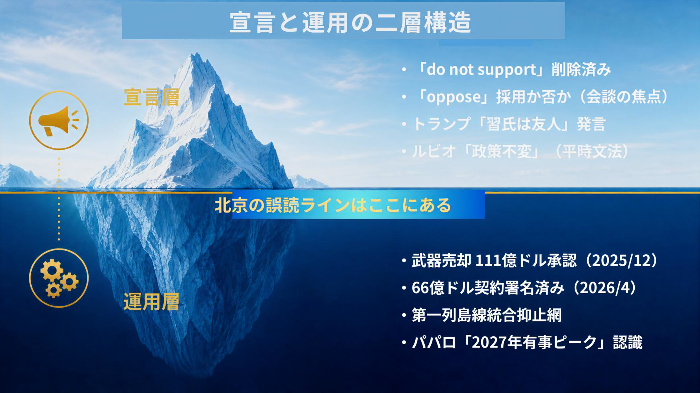

宣言は、まだ紙の上に残っていても、すでに政治的生命を失うことがある。
台湾海峡をめぐる米国の政策で、いま起きているのはその種類の変化である。軍艦が動いたわけではない。基地が閉じられたわけでもない。だが、外交の言葉が動けば、抑止の重心も動く。国家はしばしば砲声の前に、文言で後退する。
「Do not support Taiwan independence」と「Oppose Taiwan independence」。日本語にすれば、前者は「台湾独立を支持しない」、後者は「台湾独立に反対する」である。似ているようで、まったく違う。前者は、米国を抑制的な傍観者の位置に置く。後者は、米国を能動的な反独立の当事者に変える。北京がこの違いを見逃すはずがない。
問われているのは、単なる翻訳の問題ではない。米国が台湾海峡で何を守り、何を曖昧にし、何を北京に読ませるのかである。外交文書の一語は、ときに一個艦隊より静かに、しかし深く戦略環境を変える。

宣言はすでに動いている
2026年1月、トランプ政権が公表した国家安全保障戦略から、「Do not support Taiwan independence」と「one China policy」の文言が消えた。歴代政権が維持してきた宣言的な枠組みが、説明もなく削られたのである。残ったのは「一方的な現状変更を支持しない」という表現だけだった。
ルビオ国務長官は5月8日、ローマで「台湾に関する米国の方針は変わらない」と語った。日本の主要紙はそれを安心材料として扱った。だが、問題はそこではない。「変わっていない」のか。それとも、「すでに変わった後の方針」を変えていないだけなのか。この問いを避けたまま、同盟の安定を語ることはできない。
運用は固まり、宣言は緩む
奇妙なのは、宣言が緩む一方で、運用はむしろ固まっていることだ。2025年12月、米国は台湾への武器売却111億ドルを承認した。2026年4月には台湾側も66億ドル分の調達契約に署名した。兵器、弾薬、第一列島線の抑止網。現場の政策は強化されている。にもかかわらず、言葉は後退している。
ここに最大の危険がある。ワシントンは「言葉を緩めても、実体は固めている」と計算しているのだろう。だが、抑止は自国の意図だけで成立しない。相手がどう読むかによって成立する。北京が「米国は台湾独立に反対する側へ寄った」と読み、「統一への黙認」と受け止めれば、軍事行動の敷居は下がる。誤読こそ、戦争の古い入口である。

高市政権が晒される構造
日本はこの構造を他人事として眺められない。高市政権はすでに「台湾有事は存立危機事態になり得る」と答弁した。国内世論もその撤回を求めていない。日本はすでに、台湾海峡の安定を自国の安全保障に直結する問題として明確に位置づけた。
ところが、米国の宣言が後退すればどうなるか。日本だけが前に出たように見える。北京にとって、これほど使いやすい材料はない。日米の認識差を突き、東京だけを孤立した対中強硬派として描く。対日威圧発言が増えるなら、それは偶然ではない。同盟の隙間は、外交の闇市で高く売れる。
親米保守への問い
ここで、親米保守は不愉快な問いを引き受けなければならない。米国を信頼することと、米国に思考を委ねることは違う。同盟を重んじることと、同盟国の文言変更を見ないふりをすることも違う。保守とは本来、共同体を長く保つために、熱狂を節度で縛る思想である。バークが恐れたのは、理念の暴走だけではない。現実の変化を見ず、古い言葉に安住する怠惰でもあった。
もちろん、反論はある。米国の武器売却は続いている。米軍の作戦態勢も崩れていない。共同声明の一語に過剰反応すれば、かえって日米同盟を不安定にする。これは軽い反論ではない。抑止には冷静さが要る。言葉の小さな揺れを危機と叫び続ければ、政治は自ら不安を製造する。
だが、この反論が正しいからこそ、なお言葉を見なければならない。外交における文言は飾りではない。それは将来の行動を縛る細い鎖であり、相手にこちらの限界を示す標識である。標識が外されても道路は残る、という議論は一見もっともらしい。だが、霧の夜には標識の不在が事故を招く。
日本がすべきことは、米国を疑うことではない。米国の変化を直視したうえで、日本自身の言語と能力を整えることだ。会談前には、ワシントンへ「台湾海峡の平和と安定」「一方的な現状変更への反対」を後退させるなと首脳レベルで伝える。会談後には、米国の表現が曖昧であっても、日本独自の声明で抑止の空白を埋める体制を置く。南西諸島の抗堪化と豪州・フィリピン・インドとの横断的な抑止網の構築は、共同声明の結果とは無関係に動かすべき政治案件だ。
それでも残る矛盾
アーレントは、悪は怪物の顔だけで現れないと見た。命令、手続き、沈黙、空気の中にも現れる。外交においても同じだ。「政策は変わっていない」と聞いて安心する。「誰も問題にしていない」と沈黙する。「同盟だから大丈夫だ」と考えるのをやめる。その瞬間、国家は自らの判断力を失う。
宣言はすでに死にかけている。だが、抑止まで死なせる必要はない。日本が守るべきは、米国の過去の言葉ではなく、台湾海峡で誤算を生まない秩序である。自国の言葉で発し、自国の制度で備え、同盟を依存ではなく責任として引き受ける。保守がいま示すべき忠誠は、米国への盲従ではない。戦争を防ぐために現実を直視する、冷えた愛国心である。